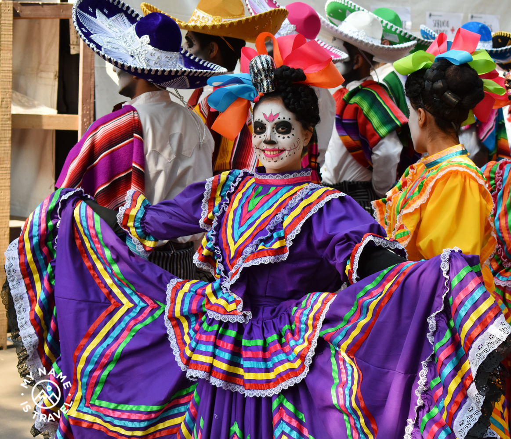

Культура Мексики
В Мексике часто проводят непривычные для жителей России и стран СНГ петушиные бои, родео, корриды и другие зрелищные представления, повышающие адреналин. Экстремальные виды спорта и развлечений – обычное явление для темпераментных мексиканцев. Традиции в еде не очень отличаются от других стран. Принято есть три раза в день, начиная утро с обильного завтрака. Мексиканская пища острая, приправленная разнообразными пряностями, в том числе жгучим перцем чили. Также местные жители употребляют много сладостей, мучных изделий. Например, вкусные тортильи из кукурузной муки – главный атрибут чуть ли ни каждого национального блюда. Большую популярность приобретает фаст-фуд, поэтому здесь все больше появляется очень полных людей, как в США. Принято считать, что мексиканцы не отличаются особой пунктуальностью. Для них опоздать на встречу на 15-30 минут и еще не предупредить об этом заранее вполне нормально. Конечно, есть среди них и ответственные, пунктуальные люди. Но это, скорее, исключение из правил. Культурные традиции Мексики проявляются и в том, что для здешних жителей не свойственно говорить «нет». Они дружелюбны и открыты, а отказывать другим в их просьбах считается проявлением гордости и эгоизма. Поэтому мексиканцы обычно соглашаются прийти на определенное мероприятие, чтобы не обидеть пригласившего, даже если планы и не позволяют выполнить обещание. Об этой особенности важно помнить, спрашивая дорогу у проходящего мимо мексиканца. Ему может быть неудобно отказать в помощи и честно признаться, что не знает, куда идти. Поэтому вы можете услышать в ответ неверное направление. Спросите лучше дорогу у нескольких местных жителей. При разговоре мексиканцы находятся на близком расстоянии друг от друга. Если кажется, что личное пространство слишком мало, то лучше не отстраняться. Так как для мексиканца это может быть сигналом неприязни и нежелания продолжать с ним беседу. Нормальным также считается иногда прикоснуться к собеседнику, даже представителю противоположного пола. Смотреть прямо в глаза тому, кто разговаривает с тобой, вполне приемлемо. Хотя среди сельских жителей это может быть воспринято, как дерзость и самомнение. Особенно в беседе со старшими, лучше отводить взгляд в сторону.
Приветствия в Мексике – важная часть их культуры.
Просто сказать «здравствуйте» и пройти мимо – это явно не по-мексикански. Местные жители обнимают своих приятелей при встрече, жмут руки. Среди женщин тоже принято обмениваться рукопожатиями и поцелуями в щеку. Мужчины и женщины могут обнять друг друга, если они знакомы. При обращении к мексиканцу принято называть его звание или профессию, например, «доктор», «директор», «адвокат», «президент» и т.п. Если вы не знаете, кем он работает и какое положение занимает, можете обратиться к нему «сеньор». Если же перед вами женщина – «сеньора» или «сеньорита». У большинства мексиканцев две фамилии (отца и матери). Лучше называть человека по фамилии отца, которая при знакомстве упоминается первой. И не торопитесь переходить на имя. Такое обращение могут посчитать фамильярным. Дождитесь, когда знакомый мексиканец сам предложит обращаться к нему просто по имени. В ресторане или кафе позвать официанта можно словами «сеньор» или «ховен» (молодой человек) вне зависимости от его возраста. А в отношении чаевых, то в Мексике их оставляют всегда и везде.
Мексиканские обычаи и семья
Семейным узам в Мексике придается большое значение. Разводы здесь не так часты, как, например, в странах Европы. В семье главой считается мужчина, авторитет которого с готовностью признают другие члены семьи. Если муж принял определенное решение, семья склонна с уважением его поддержать. Женщине отведена роль хозяйки, помощнице мужа и заботливой матери. Хотя есть местности, где много работающих женщин, которые занимают даже руководящие должности, все же это исключение. Праздничные торжества часто проходят в большом семейном кругу. Так же, как и события, связанные с похоронами кого-то из родственников. Никто не остается в стороне. Близкие приходят поддержать скорбящих и утешить. В Мексике к абортам относятся с неодобрением. Поэтому в семьях много детей, которых считают божьим благословением. Воспитывают детей с любовью, каждому стараются уделить внимание. Семья стоит на первом месте в списке приоритетов коренных мексиканцев. Многие мексиканские традиции и обычаи неразрывно связаны с различными празднованиями, которых здесь очень много. Что ни день, то праздник по какому-то поводу.